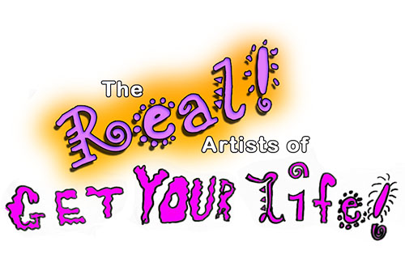
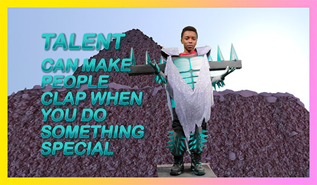

THE REAL ARTISTS OF GET YOUR LIFE!
By GYL! 2015-2016

Get Your Life! Productions (GYL!) is a Baltimore-based, youth-run video production company that creates sustained, collaborative relationships between middle school students, adult artists, and institutions. GYL! extends locally existing resources and gives young people the space to feel creative agency and the potential of a life in the arts. GYL! focuses on unlocking potentiality, dismantling limitations, and imagining new ways of being in the world through production design, field trips, classes with artists-in-residence, large-scale projects, and community events.
GYL! 2015-2016 is Anais, D'Asia, Daja, Dalin, Derrick, Jaida, Karisma, La'Daya, Lee, Louquaina, Luz, Maggie, Malanda, Nia, Renee, Stephanie, and Xavier.
Jaida’s room in THE SITUATION ROOM at Gallery CA, November 2014.
Crystal Goodman, October 2015.

GYL! auditioning actors for LIFE AS HOLLYWOOD, November 2014.

Still from I Have Special Powers, 2015.
“If I ruled the world... I would make so that everyone would have to read and learn Korean language because I love South Korea and how everyone will start doing everything like Korean. I would be the queen & South Korea love me. Thank you very much.”
- Malanda Jackson
“If I ruled the world... ‘Let It Go’ from Frozen would be the national anthem and a chicken box and a half n half would be in every resturant.”
- Dalin Haleem
“If I ruled the world... I would buy every chicken spot!”
- La’Daya Galloway
Still from The Real Artists of Get Your Life!, 2016.
By Jaida, the most wealthy, beautiful and powerful woman in Ethipia of being a queen.
On set with Champ the pony, December 2014.

By Xavier Wade, The King.
Get Your Life! Productions (GYL!) - GYL! is a Baltimore-based, youth-run video production company that creates sustained, collaborative relationships between middle school students, adult artists, and institutions. GYL! extends locally existing resources and gives young people the space to feel creative agency and the potential of a life in the arts. GYL! focuses on unlocking potentiality, dismantling limitations, and imagining new ways of being in the world through production design, field trips, classes with artists-in-residence, large-scale projects, and community events.